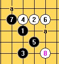
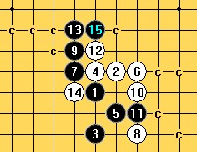
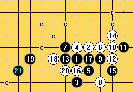
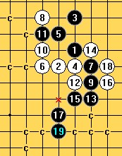
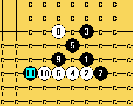
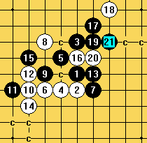

请教下天羽老师对这个明星白六的看法
#1 请教下天羽老师对这个明星白六的看法 作者：gerbo 发表时间：2008-12-12 2:00:33
=======上图对应的爱五子棋谱代码如下，以便你拆解：========
h8g7h10h7g9f7i7f10i6f8f9h6
======================================================
这个白六我应该如何走好些了？白到白12前面白都是唯一点，很困惑，非常困惑~~难道是那个7？又或者是。。。晕了。。。
#2 Re:请教下天羽老师对这个明星白六的看法 作者：gerbo 发表时间：2008-12-12 2:03:38
 俺确实糊涂了，话没说清楚 。上图的白10、白12都是唯一。
俺确实糊涂了，话没说清楚 。上图的白10、白12都是唯一。
#3 Re:请教下天羽老师对这个明星白六的看法 作者：gerbo 发表时间：2008-12-12 2:08:34
 让俺大掉眼镜的白六，今天下这个的棋友俺服了他了，好像还是第一见到这个六，嘎嘎~~还好，他没下出最强防守防，让俺前面的漏算没被识破~
让俺大掉眼镜的白六，今天下这个的棋友俺服了他了，好像还是第一见到这个六，嘎嘎~~还好，他没下出最强防守防，让俺前面的漏算没被识破~ ~~有请天羽老师对这个二打点来点分析~~
~~有请天羽老师对这个二打点来点分析~~
#4 Re:请教下天羽老师对这个明星白六的看法 作者：賢周 发表时间：2008-12-12 6:36:03
=======上图对应的爱五子棋谱代码如下，以便你拆解：========
h8g7h10h7g9f7i7f10f8e7d7e8i8e6e9h9g8j8
======================================================
［ 有志青年 于 2008-12-12 21:41:58 时奖励此帖[金币加 20 威望加1］
#5 Re:请教下天羽老师对这个明星白六的看法 作者：冷面孤煞 发表时间：2008-12-12 18:49:49
=======上图对应的爱五子棋谱代码如下，以便你拆解：========
h8g7h10h7g9f7i7f10f8e7d7
======================================================呵呵，这样的9黑基本OK了吧
#6 Re:请教下天羽老师对这个明星白六的看法 作者：深蓝妖瞳 发表时间：2008-12-12 19:09:34
这路是黑石杀不掉的，其他的防守黑石都能杀。
嘿嘿
=======上图对应的爱五子棋谱代码如下，以便你拆解：========
h8g7h10h7g9f7i7f10f8e7d7e8i8e6e9h9g8j8l8i9j10k9j12i11l10
======================================================
#7 Re:请教下天羽老师对这个明星白六的看法 作者：战龙在野 发表时间：2008-12-12 19:22:45
=======上图对应的爱五子棋谱代码如下，以便你拆解：========
h8h7h10g7g9f7i7f10f8e7d7e8i8e6e9h9i11j12i10i9j10
======================================================
这个？
#8 Re:请教下天羽老师对这个明星白六的看法 作者：屏蔽 发表时间：2008-12-12 19:25:00
=======上图对应的爱五子棋谱代码如下，以便你拆解：========
h8i9h6h9i7j9g9j6j8k9l9k8g8k10k7h7g5f4g6g7f6e6d8e7e8f8d9f7d7d10e9
======================================================
以前拆的黑胜谱。
=======上图对应的爱五子棋谱代码如下，以便你拆解：========
h8i9h6h9i7j9g9j6j8k9l9k8f8k10k7h7g5f4g6k12k11i10
======================================================
错误的13，强攻导致失败。
=======上图对应的爱五子棋谱代码如下，以便你拆解：========
h8i9h6h9i7j9g9j6j8k9l9k8f8k10k7h7i8g8i10e7
======================================================
另一变化，19后白棋怎么走？20？
当然还有4楼交换干净的变化。
=======上图对应的爱五子棋谱代码如下，以便你拆解：========
h8i9h6h9i7j9g9j6g10j8j7h10g11g8
======================================================
黑9的变化，黑棋是否能胜？
LZ的黑9的确是很强的一手，不知道白棋还有没有机会。
#9 Re:Re:请教下天羽老师对这个明星白六的看法 作者：yoda 发表时间：2008-12-12 19:43:19

两个9都能胜。

#10 Re:请教下天羽老师对这个明星白六的看法 作者：战龙在野 发表时间：2008-12-12 20:24:25
=======上图对应的爱五子棋谱代码如下，以便你拆解：========
h8h7h10g7g9f7i7f10i6f8f9h6i5i8h5j6
======================================================
这个你怎么杀的？看看是什么思路，要多少步
#11 Re:请教下天羽老师对这个明星白六的看法 作者：越狱行辕 发表时间：2008-12-12 20:28:00
这对 发问这个人感到，，，，，什么叫难道是那个七？至于么
#12 Re:请教下天羽老师对这个明星白六的看法 作者：yoda 发表时间：2008-12-12 20:32:00
4g活三就简单追胜了。#13 Re:请教下天羽老师对这个明星白六的看法 作者：战龙在野 发表时间：2008-12-12 21:17:38
=======上图对应的爱五子棋谱代码如下，以便你拆解：========
h8h7h10g7g9f7i7f10i6f8f9h6i5i8h5j6g4j7
======================================================
J7防啊？
#14 Re:Re:请教下天羽老师对这个明星白六的看法 作者：yoda 发表时间：2008-12-12 21:37:29

19基本型。
［ 有志青年 于 2008-12-12 21:40:52 时奖励此帖[金币加 20 威望加1］
#15 Re:请教下天羽老师对这个明星白六的看法 作者：gerbo 发表时间：2008-12-13 6:07:43
惊叹！
#16 Re:请教下天羽老师对这个明星白六的看法 作者：快乐天羽 发表时间：2008-12-13 16:01:11
喜欢这样大家交流。这个6，确实是黑必胜。当然由于6比较弱，可能胜法很多。每个人的进攻做棋思路不一样，所以胜法也许不同。#17 Re:Re:请教下天羽老师对这个明星白六的看法 作者：walker 发表时间：2008-12-15 3:07:02
回8楼的第2、第3图：错误的13，白16在此胜。
=======上图对应的爱五子棋谱代码如下，以便你拆解：========
h8i9h6h9i7j9g9j6j8k9l9k8f8k10k7i8h7j7k6i10
======================================================
#18 Re:请教下天羽老师对这个明星白六的看法 作者：nara 发表时间：2008-12-17 19:15:23


这个9地毯也可以的!